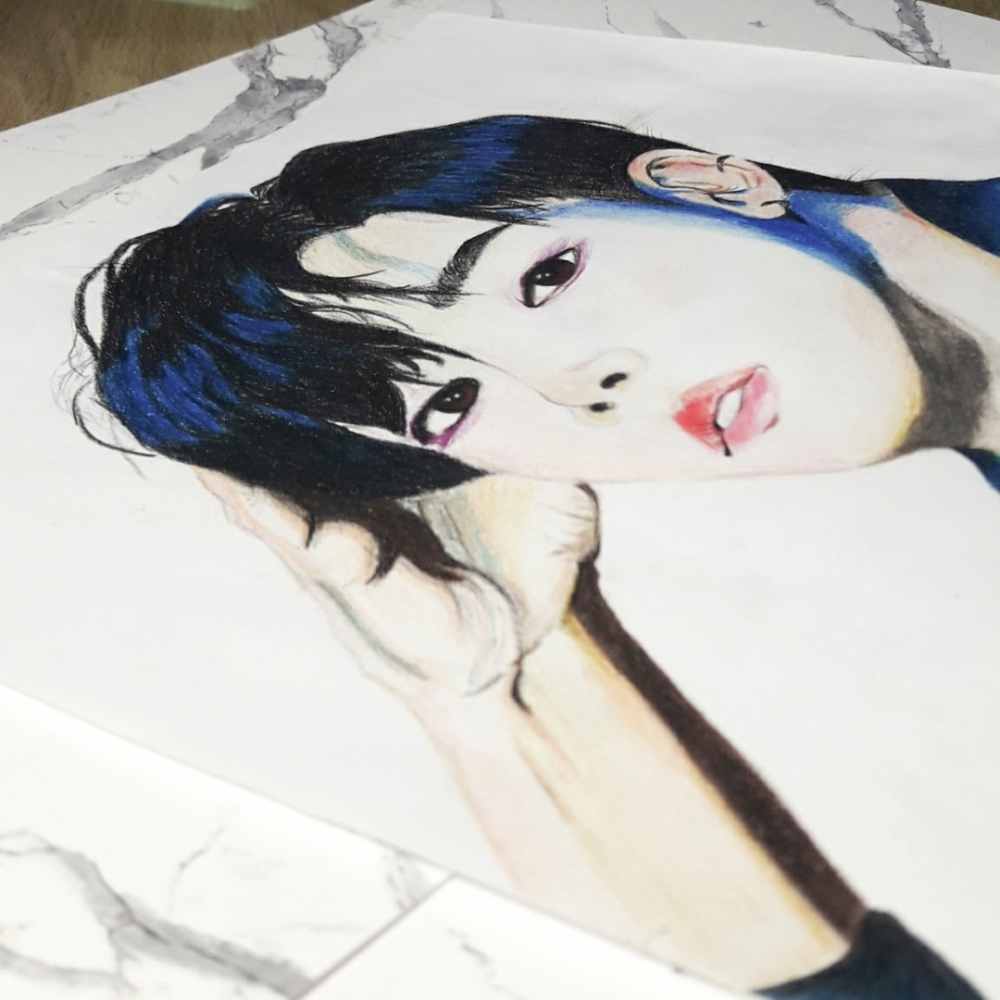
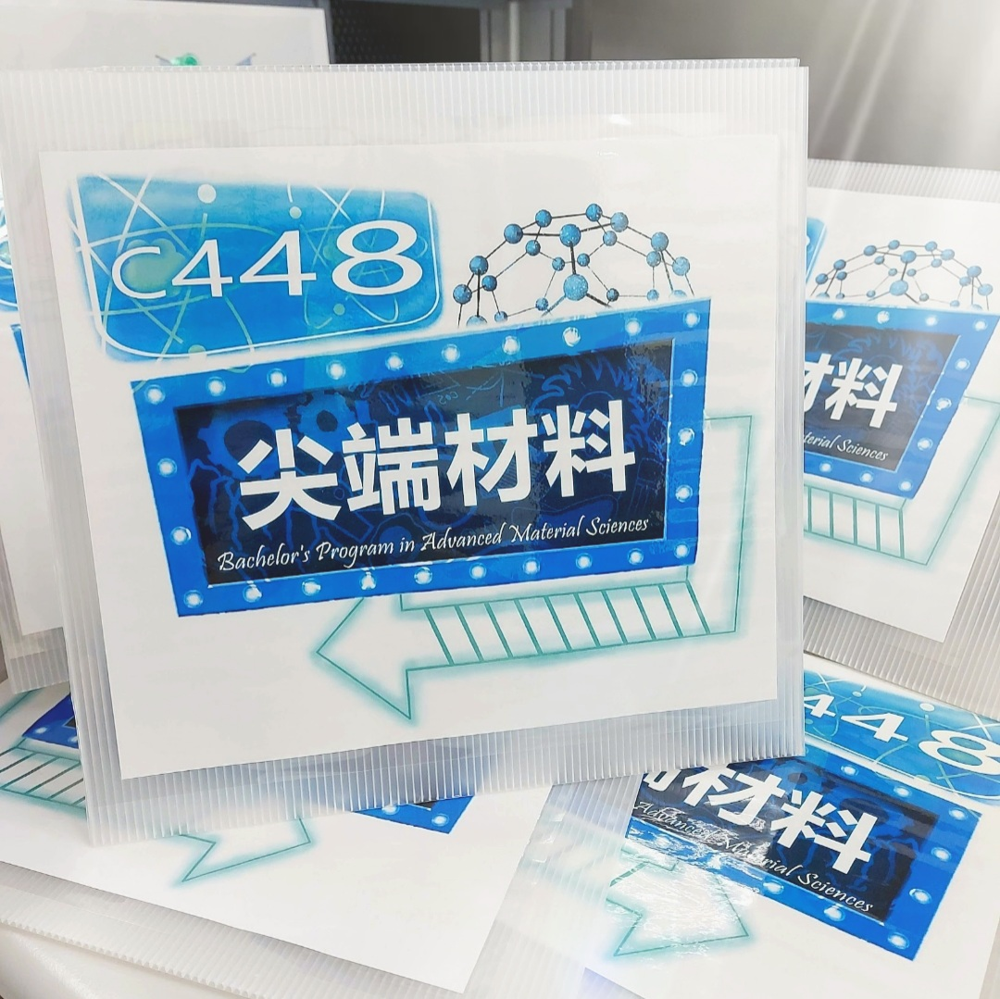
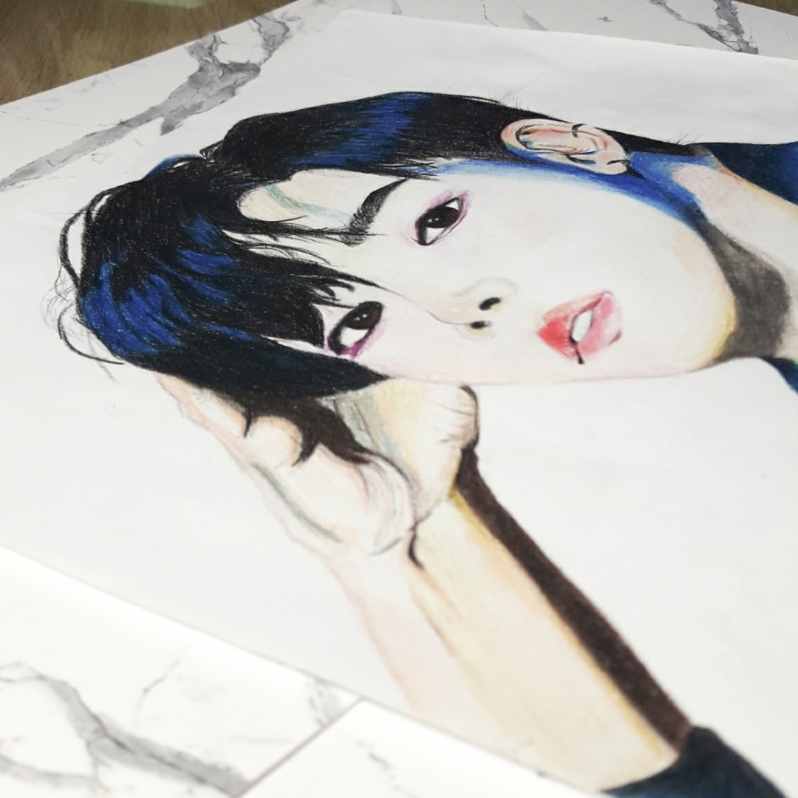
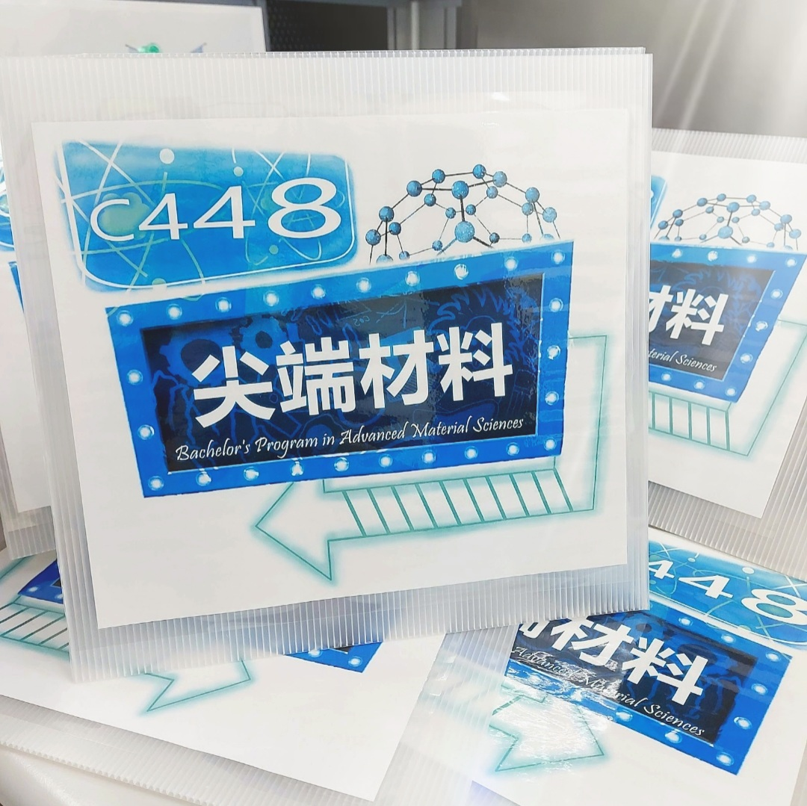
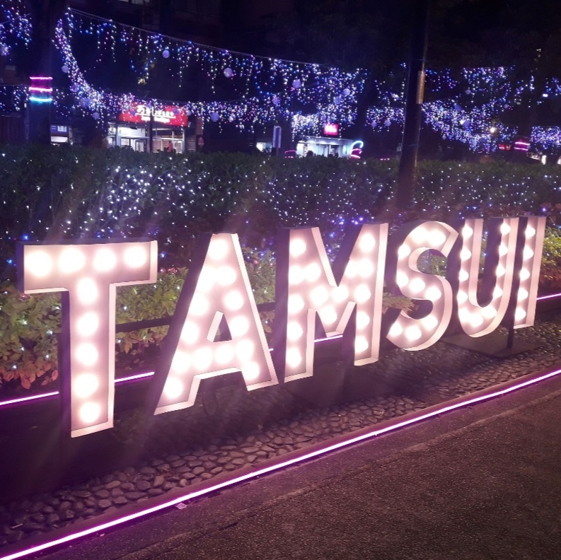
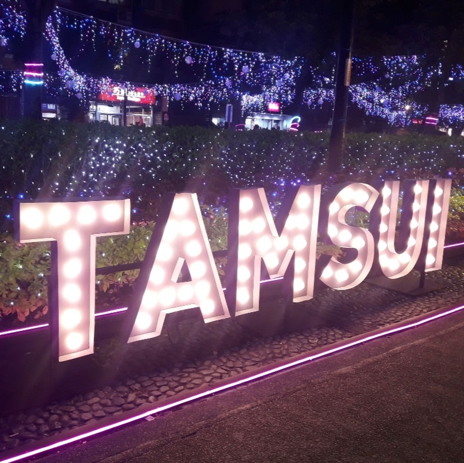

November 8 1999
This Is Me


My name is CHANG,CHIAO-YUN,I major in bachelor's program in advanced material sciences at Tamkang university.
我是就讀淡江大學理學院尖端材料科學學士學位學程的張巧韻，曾擔任學程系學會的美宣長， 在學程辦公室任職工讀生，舉辦過學會活動、參與系上招生、系博覽會、淡江耶誕城等多種活動。 平時也非常熱愛舞蹈和美術，在高中的社團期間，參加過各種演出，我們曾經在西門町、校園、日本交流等場合表演， 是有趣又深刻的體驗。
在高中時交到一群莫逆之交的朋友們，高中畢業到現在還是常常互相聯絡，以前每年都會相約去旅行， 如今因為疫情讓我們只能在網路上相聚，除此之外，疫情流行前我也常去參加喜歡的展覽和演唱會， 真心希望疫情得以控制，趕快回到以前的生活。
 





 
